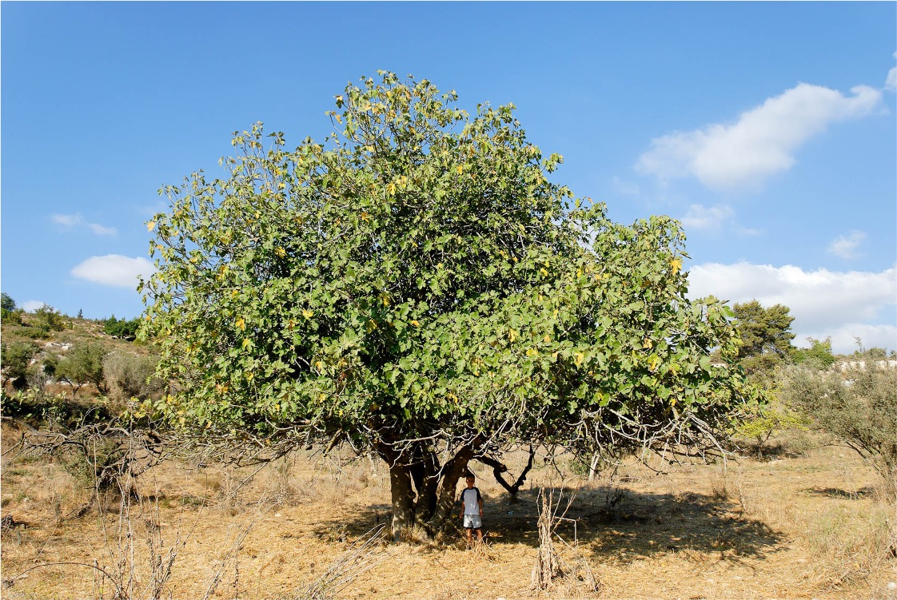

Genesis 3
Table of Contents
Read/hear the portion: Genesis 3:1-24
Videos:
1-6:
7-24:
Summary: At the end of chapter two, Adam and Eve are placed in the Garden of Eden and commanded not to eat from the “Tree of Knowledge of Good and Evil.” The serpent persuades Eve to violate the command, and she shares the forbidden fruit with her husband. Because of their sin, it is decreed that man will experience death, returning to the soil from which he was formed and that all gain will come only through struggle and hardship. Man is banished from the Garden.1
Genesis 3:1-5 The Serpent casts doubt on the Word of God
| Gen 3:1 | Reference |
|---|---|
| Now the serpent was more crafty than any other beast of the field that the LORD God had made. He said to the woman, “Did God actually say, ‘You shall not eat of any tree in the garden’?” | Rev 20:2 And he seized the dragon, that ancient serpent, who is the devil and Satan, and bound him for a thousand years, 2 Cor 11:3 But I am afraid that as the serpent deceived Eve by his cunning, your thoughts will be led astray from a sincere and pure devotion to Christ. Eze 28:13-15 You were in Eden, the garden of God; every precious stone was your covering, sardius, topaz, and diamond, beryl, onyx, and jasper, sapphire, emerald, and carbuncle; and crafted in gold were your settings and your engravings. On the day that you were created they were prepared. [14] You were an anointed guardian cherub. I placed you; you were on the holy mountain of God; in the midst of the stones of fire you walked. [15] You were blameless in your ways from the day you were created, till unrighteousness was found in you. |
OK a talking snake is a bit unusual. According to Jewish legend, Lucifer was enraged at God’s decision to create man, whom Lucifer no doubt viewed as a threat to his own status (and still does) he departed from God’s council and inhabited the snake. The serpent may in fact be the first case of demon possession in Scripture. We aren’t told much about the fall of Satan/Lucifer. In fact Heiser asserts that the Satan of Job chapter 1 and the serpent here were not originally the same being. The Satan, which means accuser, appeared to be serving the role of a court-appointed prosecutor, a role that apparently did exactly what God wanted him to do. The word Satan never appears in the Torah. In fact, it’s only in 11 verses in Job, two verses in Zechariah and one verse in 1 Chronicles. The word “devil” never appears in the Hebrew Bible. Later in Jewish history, the serpent of Eden, the devil, and the Satan of Job become co-mingled. After Genesis 3, the word serpent is typically only used to mean a snake, not a supernatural fallen angel By the time of Revelation at the end of the 1st century, the serpent, the devil, and the satan are all the same entity.
Isaiah 14 and Ezekiel 28 are the two chapters that give us some biography of Satan, with Ezekiel 28:13 stating he was in Eden.
Missler says there are two basic errors we make regarding Satan (and Lancaster reports that throughout history, Judaism makes the same two errors):
-
Pretend he doesn’t exist.
-
This view holds that the devil is merely an abstraction or a symbol of man’s evil inclination.
-
In contrast, “he” authors evil and seizes upon every evil opportunity.”2
-
He was real in the life of Jesus.
-
-
Live in fear of him.
- People who do this are paralized and see the devil as behind everything that is not right.
- 1 Jn 4:4 Little children, you are from God and have overcome them, for he who is in you is greater than he who is in the world.
The serpent uses the same basic approach as advertisers do today. FOMO. Fear of missing out. From the Wikipedia entry:
- Fear of missing out (FOMO)
- The feeling of apprehension that one is either not in the know or missing out on information, events, experiences, or life decisions that could make one’s life better.
-
FOMO is also associated with a fear of regret which may lead to concerns that one might miss an opportunity for social interaction, a novel experience, a memorable event, or a profitable investment.
-
It is characterized by a desire to stay continually connected with what others are doing, and can be described as the fear that deciding not to participate is the wrong choice.3
In this case, the FOMO was the chance to be like God.
| Gen 3:2-3 | Reference |
|---|---|
And the woman said to the serpent, “We may eat of the fruit of the trees in the garden, but God said, ‘You shall not eat of the fruit of the tree that is in the midst of the garden, neither shall you touch it, lest you die.’” |
Rev 22:18-19 I warn everyone who hears the words of the prophecy of this book: if anyone adds to them, God will add to him the plagues described in this book, [19] and if anyone takes away from the words of the book of this prophecy, God will take away his share in the tree of life and in the holy city, which are described in this book. |
Note Eve’s name is not mentioned here, which reminds me of Matthew’s genealogy where Bathsheba is referred to only as “the wife of Uriah.”

Commentators have chastised her for adding to the word of God here. We do not have it recorded that God didn’t command them to touch it. Adding to God’s word is something cults do and it leads to theological danger. When we add to God’s word, we give Satan an opportunity to twist and manipulate Scripture. All that is true and we should never say that God said something He never said. If this is truly what she did, she’s wrong. With that said, my thought here is with respect to Eve, this is much ado about nothing.
Judaism is known for putting fences or hedges around prohibited activities, and our churches do the same thing by the way. I’ve mentioned the fact that the Bible does not prohibit drinking alcohol; the Bible prohibits being drunk from alcohol. Many churches add a hedge that prohibits its members, or at a minimum, its leadership from drinking alcohol. Why? If you don’t drink alcohol, then you won’t get drunk. I’m not saying it’s necessarily a bad rule in many situations, but we need to realize it’s man’s rule, not God’s. Churches that do this are just as guilty of “adding to God’s word” as Eve is here. In the same way, if the rule is not to eat the forbidden fruit, then it seems like a wise plan not to touch it. If you don’t touch it, you probably won’t be in any danger of eating it.
Remember, Adam and Eve walked with God and therefore they had many conversations that weren’t recorded. We don’t know with absolute certainty that God did NOT in fact say, “neither shall you touch it”; however, it was not accurate to say hyper-literally that merely touching the fruit would directly result in death. To be sure, touching it indirectly led to death.
Let’s assume Eve was being reasonably factual here and move on!
| Gen 3:4-5 | Reference |
|---|---|
| But the serpent said to the woman, “You will not surely die. For God knows that when you eat of it your eyes will be opened, and you will be like God, knowing good and evil.” | John 8:44 You are of your father the devil, and your will is to do your father’s desires. He was a murderer from the beginning, and does not stand in the truth, because there is no truth in him. When he lies, he speaks out of his own character, for he is a liar and the father of lies. |
Knowing good from evil sounds like the mark of wisdom. Why would God not want His creation to be able to differentiate? Further, why would God put something he didn’t want His people to do in the Garden? Isn’t that entrapment?
We often think of “evil” as a state; so in our view, what’s the problem of knowing about something as long as you don’t partake? Hebraic thought is much more action oriented. So, in Hebrew, evil means bad things happen.
After a tragedy, we frequently hear, “how can a good God let this happen?” This is a difficult question and, when one is going through a trial, it seems to be reasonable to ask. Many have asked a similar question here. Why would God place the serpent and the tree in the Garden knowing they would fail. The answer is simple. To be human means we have to make choices. “It was important to God that human beings be free creatures with real choices…If God had created a world where evil was not possible, it would also preclude the possibility of good.”4
In John 8, we might say the religious rulers brought a knife to a gun fight. They made a not-so-subtle jab at Jesus’ presumed illegitimate father in verse 39. “Where is your father?” Jesus turns around and tells them who THEIR father is! John 8 has the tensest, most combative exchange in the Gospels. Those of us who secretely have a mischevious side, tend to love John 8
Genesis 3:6-13 Man and woman disobey the Word of God
| Gen 3:6 | Reference |
|---|---|
| So when the woman saw that the tree was good for food, and that it was a delight to the eyes, and that the tree was to be desired to make one wise, she took of its fruit and ate, and she also gave some to her husband who was with her, and he ate. | 1Co 10:13-14 No temptation has overtaken you that is not common to man. God is faithful, and he will not let you be tempted beyond your ability, but with the temptation he will also provide the way of escape, that you may be able to endure it. Therefore, my beloved, flee from idolatry. 1 Tim 2:14 and Adam was not deceived, but the woman was deceived and became a transgressor. Ex 32:31-32 So Moses returned to the LORD and said, “Alas, this people has sinned a great sin. They have made for themselves gods of gold. But now, if you will forgive their sin—but if not, please blot me out of your book that you have written.” Joh 15:13 Greater love has no one than this, that he lay down his life for his friends. |
Here we are told that because of FOMO, the woman ate it and gave it to the man to eat. We are not told what kind of fruit it was. Jewish tradition holds that it was a fig (likely because of the next verse).
Here we see a theme that will be repeated in the Bible, most notoriously of David’s sin with Bathsheba.
-
Not where we’re supposed to be.
-
We see something pleasing.
-
We desire it.
-
We touch it.
-
We take it.
-
We partake in it.
We can summarise this by saying 1) Doubt God’s Word (Did God really say?); 2) Deny God’s word (God never said that!); 3) Rationalize our behavior (see? We’re not dead and it was pleasant).
1 Corinthians 10:13 reminds us that each choice has a way out. It’s as if God puts stop signs that we blow right through. Just because you see doesn’t mean you have to covet. Just because you covet doesn’t mean you have to touch. Just because you touch doesn’t mean you have to take, and so on. There may not be any immediate negative reaction either. Eve initially said that if she touched it she would die. That didn’t happen.
Adam knew what he was doing
As we noted last lesson, Paul makes it very clear that Eve was deceived but Adam was not. While this passage is often used to browbeat Eve, I think something else is going on. If Adam wasn’t deceived, that means he intentionally and deliberately ate the forbidden fruit. He knew EXACTLY what he was doing. Perhaps he didn’t appreciate all of the ramifications, but he knew the general consequence for disobedience (“you shall surely die”) yet did it anyway.
Why? Was this deliberate rebellion? Missler says no; in fact Adam was modeling Jesus. He paints a great visual of what it might have been like in that moment where Eve had sinned and Adam hadn’t yet. “Wow, kid. You really messed up. You’re going to get it when dad finds out. I’m still ok. I haven’t done anything wrong, but you. Wow. I’ll be sure to pray for you.” That’s how WE would probably respond, but that’s not how Adam responded.
He knew what he was doing and what the consequences would be. Try this theory on for size: Adam willingly laid his life down to join Eve in her predicament rather than let Eve languish alone for eternity. This is something Moses offered to do after the Golden Calf incident. In Exodus 32:32, Moses says “blot me out of your book of life.”
In fact, had Adam not joined Eve, there would have been no Messiah and thus no means of salvation for Eve.
All of this is a picture of Jesus, the sinless second Adam who laid down his life for us.
First/Second Adam Comparison
Paul draws several comparisons between Adam and Jesus the second Adam. It is helpful to view these side-by-side.
| Verse | First Adam | Jesus (2nd Adam) |
|---|---|---|
| Romans 5:15 | Many died through one man’s trespass | Much more have the grace of God and the free gift by the grace of that one man Jesus Christ |
| Romans 5:16 | The judgment following one trespass brought condemnation | The free gift following many trespasses brought justification |
| Romans 5:17 | Because of one man’s trespass, death reigned through that one man | Much more those who receive the abundance of grace and the free gift of righteousness will reign in life through the one man Jesus Christ |
| Romans 5:18 | One trespass led to condemnation for all men | One act of righteousness leads to justification and life for all men |
| Romans 5:19 | by the one man’s disobedience the many were made sinners | by the one man’s obedience the many will be made righteous |
| 1 Corinthians 15:21 | by a man came death | by a man has come also the resurrection of the dead |
| 1 Corinthians 15:22 | in Adam all die | in Christ shall all be made alive |
| 1 Corinthians 15:45 | The first man Adam became a living being | the last Adam became a life-giving spirit |
| 1 Corinthians 15:46 | The spiritual is not first, but the natural | Then the spiritual |
| 1 Corinthians 15:47 | The first man is from the earth | The second man is from heaven |
| 1 Corinthians 15:48 | As is the earthly, so also are those who are earthly | And as is the heavenly, so also are those who are heavenly |
| 1 Corinthians 15:49 | Just as we have born the image of the earthly | We will also bear the image of the heavenly |
Walking in His Dust – At Genesis 3:6, Pliskin draws a seemingly odd conclusion about how we should put “love your neighbor” into practice. We may never be in a position to lay down our lives for our friends, but Pliskin writes of a much more immediate and practical application, “we should look for opportunities to save others from embarrassment.”5 In a sense, this is what Adam did. He didn’t let her suffer alone. Pliskin includes a few anecdotes from Jewish writings but here is a simple one. At Passover, a guest accidentally spilled some wine onto the tablecloth. Noticing his guest’s embarrassment, the host discreetly shook the table so that his cup of wine also tumbled over. “Something must be wrong with the table. It’s not standing properly.” At times, this may mean sacrificing a bit of our dignity to cover for another.
| Gen 3:7 | Reference |
|---|---|
| Then the eyes of both were opened, and they knew that they were naked. And they sewed fig leaves together and made themselves loincloths. |
The serpent did not lie about their eyes being opened; like a slick salesman, he sold them on the benefits while glossing over the risks.
It’s very interesting that we don’t usually associate the fall with anything sexual, but apparently, their formerly pure sexual identity was the first thing they lost. It is not always polite to discuss but to be human is to be uniquely sexual. When we realize this, it is no wonder why Satan’s biggest attacks throughout history and to this very day seem to be related to sex. The human sex drive was twisted into something even from the very start.
Sewing the fig leaves (ouch) has been described as the first act of religion in the Bible. Mr. and Mrs. Man’s attempt to cover their sin by their own efforts. By the end of the chapter, God will show us His way of covering sin.
| Gen 3:8-9 | Reference |
|---|---|
| And they heard the sound of the LORD God walking in the garden in the cool of the day, and the man and his wife hid themselves from the presence of the LORD God among the trees of the garden. But the LORD God called to the man and said to him, “Where are you?” |
One Jewish tradition holds that they weren’t actually nude as we think of it but Adam and Even were clothed with light, in other words not merely a physical but a spiritual garment. This allowed Adam and Eve to communicate directly with God. After the Fall, they lost this spiritual garment and were no longer able to speak as they once did. This even affected they way they heard God’s voice. Instead of directly, Adam now heard God’s voice only indirectly. Instead of pleasing, it was now terrifying. He could only hide in fear.
If we’re feeling distant from God, we’re the ones who moved. God is seeking us out. A shepherd always seeks the sheep.
“Does God really see everything I do?” “God loves you so much He can’t take His eyes off you.”
It can be said of every other religion that it is man’s search for God. In contrast, the Judeo-Christian faith is about “God’s search for man.”6
| Gen 3:10-11 | Reference |
|---|---|
| And he said, “I heard the sound of you in the garden, and I was afraid, because I was naked, and I hid myself.” He said, “Who told you that you were naked? | 1 Co 6:15 Do you not know that your bodies are members of Christ? Shall I then take the members of Christ and make them members of a prostitute? Never! |
Again, note the sexual connotation in this passage. We think of sinning against God as something spiritual, which of course it is. But it’s not JUST spiritual. To separate the physical from the spiritual as is common in Christianity today may be another attack from the enemy. Spirit good, flesh bad goes back to Gnostic heresy in the 2nd and 3rd centuries. The lessons from scripture is the opposite of this: how we use our physical bodies directly affects our relationship and fellowship with God.
| Gen 3:11-13 | Reference |
|---|---|
| Have you eaten of the tree of which I commanded you not to eat?” The man said, “The woman whom you gave to be with me, she gave me fruit of the tree, and I ate.” Then the LORD God said to the woman, “What is this that you have done?” The woman said, “The serpent deceived me, and I ate.” |
Much is made of Adam’s passing the buck here. The common interpretation goes something like this:
“when God confronted Adam on his sin, he refused to take accountability and instead attempted to shift the blame to Eve. Adam even takes a parting shot at God by implying that God is somehow responsible for Adam’s predicament. In Adam’s mind, if there had been no woman there would have been no sin, so it’s not his fault. Similarly, Eve refuses to own what she has done and attempts to shift blame to the Serpent. Of course, God sees right through their games and would have none of this. He then has to set the record straight.”
If we are true to scripture, which should ALWAYS be our goal, the biblical text supports virtually none of these assertions made by modern commentators. I’m not saying the application of taking accountability is not valid. 1 John 1 8-9 are words to live by for disciples of Jesus <read>
I’m only saying the Bible is silent with respect to this question of whether or not Adam and Eve “passed the buck”. The traditional protestant interpretation puts words in God’s mouth and we need to be very cautious about that.
If you notice, God doesn’t challenge Adam’s assertion. On the surface, it is a factual statement, including the part about the “woman You gave me.” He doesn’t challenge Eve’s assertion either.
Often, we read into the biblical text how WE would respond if we were in the same situation. Then we assume that’s how the characters in the narrative must also have responded. Parents are all too familiar with the “blame games” played by their kids. This is a source of constant frustration for parents; therefore, we presume God must have felt exasperated just as way we do when our kids play the blame game. So a theology is born about how Adam skirted his responsibility and blamed someone else.
Now of course, on a deeper application level, we need to own our sin and not blame someone else or blame God (or even blame the enemy) for what we did. “The devil made me do it” is a cop out. The devil may have showed you something appealing, but you are the one who “did it.” (whatever “it” happens to be). Eve’s response is actually quite good here. I was lied to, but ultimately I’m the one who ate.
It’s also often taught that Adam was not where he should have been, which was protecting his wife. While this is also not an incorrect application for us, let’s be clear we are reading that into the text. The text doesn’t say where Adam was and it doesn’t chastise him for not being where He was supposed to be. We are adding that in. Again, I’m not saying that is necessarily an incorrect assumption; but it is an assumption nonetheless. We need to be careful when we assume as the saying goes. For all we know, Adam in his still unfallen state, was walking with God at the time, which means he was exactly where he should have been.
Genesis 3:14-19: God’s Judgment
| Gen 3:14-15 | Reference |
|---|---|
| The LORD God said to the serpent, “Because you have done this, cursed are you above all livestock and above all beasts of the field; on your belly you shall go, and dust you shall eat all the days of your life. I will put enmity between you and the woman, and between your offspring and her offspring; he shall bruise your head, and you shall bruise his heel.” | 1 John 3:8 Whoever makes a practice of sinning is of the devil, for the devil has been sinning from the beginning. The reason the Son of God appeared was to destroy the works of the devil. Gal 4:4 But when the fullness of time had come, God sent forth his Son, born of woman, born under the law, Rom 16:20 The God of peace will soon crush Satan under your feet. Rev 12:13 And when the dragon saw that he had been thrown down to the earth, he pursued the woman who had given birth to the male child. Luke 10:19 Behold, I have given you authority to tread on serpents and scorpions, and over all the power of the enemy, and nothing shall hurt you. |
God’s declaration of war on Satan. This is a messianic prophecy and even hints of the Virgin birth. Biologically, the “seed” is always in the male.
Missler calls this the “seed plot of the Bible.” From here until Jesus, the messianic line will be under constant attack starting with Cain and Abel (actually it started with Adam and Eve) and continuing to the Cross and beyond.
| Gen 3:16 | Reference |
|---|---|
| To the woman he said, “I will surely multiply your pain in childbearing; in pain you shall bring forth children. Your desire shall be contrary to your husband, but he shall rule over you.” | John 16:20 Truly, truly, I say to you, you will weep and lament, but the world will rejoice. You will be sorrowful, but your sorrow will turn into joy. Romans 8:21-22 that the creation itself will be set free from its bondage to corruption and obtain the freedom of the glory of the children of God. 22 For we know that the whole creation has been groaning together in the pains of childbirth until now. |
The original intent was for Man and woman to be helpers and partners. Like officers in a company where the members have different roles but both answer to the head, which is God in this case. After the fall the relationship strained, and we certainly see the fruits of this in our society.
God frequently uses the model of childbirth to describe the present, sinful age. There will be birth pains and travail as with labor, but then just as when the child is born, in the age to come all of that will give way to joy.
| Gen 3:17-19 | Reference |
|---|---|
| And to Adam he said, “Because you have listened to the voice of your wife and have eaten of the tree of which I commanded you, ‘You shall not eat of it,’ cursed is the ground because of you; in pain you shall eat of it all the days of your life; thorns and thistles it shall bring forth for you; and you shall eat the plants of the field. By the sweat of your face you shall eat bread, till you return to the ground, for out of it you were taken; for you are dust, and to dust you shall return.” | Rev 22:3 No longer will there be anything accursed, but the throne of God and of the Lamb will be in it, and his servants will worship him. Rev 21:4 He will wipe away every tear from their eyes, and death shall be no more, neither shall there be mourning, nor crying, nor pain anymore, for the former things have passed away.” 1 Cor 15:21, 47 For as by a man came death, by a man has come also the resurrection of the dead. The first man was from the earth, a man of dust; the second man is from heaven. |
Genesis 3:20-24: A model of Redemption
| Gen 3:20 | Reference |
|---|---|
| The man called his wife’s name Eve, because she was the mother of all living. |
| Gen 3:21 | Reference |
|---|---|
| And the LORD God made for Adam and for his wife garments of skins and clothed them. | Mat 25:36, 38, 40 I was naked and you clothed me, I was sick and you visited me, I was in prison and you came to me.’ … And when did we see you a stranger and welcome you, or naked and clothe you? … And the King will answer them, ‘Truly, I say to you, as you did it to one of the least of these my brothers, you did it to me.’ |
Always look for what seems like it should be said but isn’t. On a surface level, God apparently slaughtered an animal, but that’s not what it says.
The Jewish sacrificial system sounds so antiquated and foreign to those of us who purchase our meat neatly prepared and wrapped in cellophane, but it has its roots right here. This is a hint that blood is required for sin. Without the shedding of blood, there can be no remission of sins. An innocent must die. It’s all here and it’s all because of sin.
Walking in His Dust – a very practical way to love our neighbor is modeled by God in verse 21 and also by Jesus in Matthew 21. We are obligated to provide clothes for the needy.7 Just as God clothed the naked Adam and Eve. And if God made them, we can be sure this was the finest leather, not cheap polyester! Thus, there is also the secondary lesson that we should attempt to have the clothing we give away be of the finest quality; however, it is better to attempt to give old clothes to a needy person before we throw them in the trash. A poor person would prefer used clothes to none at all. As with the LYN reference above, we should take great care not to embarrass the recipient.
Rabbi Pliskin draws a second lesson from the same passage, “we must be aware of the greatness of lovingkindness.”8 He then draws an interesting contrast between lovingkindness and charity. “The sages taught that loving-kindness in all its forms is greater than charity.”9 He then gives some examples.
-
“Charity is performed only with money, whereas lovingkindness can be performed both bodily and monetarily.”
- As it is written, “God MADE them coats of skin”
-
“Charity applies only to the poor, whereas lovingkindness applies to everyone.”
-
For it is written “He made for ADAM coats of skin”
-
Adam had all the riches of the world at his disposal including the ability to slay his own animal and make his own coat.
-
Still, God chose to bless him.
-
There are several instances in the gospels where Jesus will appear to violate the Jewish law, but when we peel back the layers, we see what he is really doing is performing an act of loving kindness when such an act takes priority over the law. I’ve given the example before of how it’s ok to travel at twice the posted speed limit, provided you have lights, sirens, and the word “ambulance” written on your vehicle. The first-responders are performing an act of lovingkindness and trying to save a life, which is more important than the policy dictating how fast one may drive under normal conditions.
| Gen 3:22-23 | Reference |
|---|---|
Then the LORD God said, “Behold, the man has become like one of us in knowing good and evil. Now, lest he reach out his hand and take also of the tree of life and eat, and live forever—” therefore the LORD God sent him out from the garden of Eden to work the ground from which he was taken. |
Do you see God as a cosmic killjoy who is only interested in taking your pleasure? Adam and Eve could have seen it that way. It might be easy to read and think “why doesn’t God want them to live forever?”
| Gen 3:24 | Reference |
|---|---|
| He drove out the man, and at the east of the garden of Eden he placed the cherubim and a flaming sword that turned every way to guard the way to the tree of life. | Rev 22:2 through the middle of the street of the city; also, on either side of the river, the tree of life with its twelve kinds of fruit, yielding its fruit each month. The leaves of the tree were for the healing of the nations. Joh 7:38 Whoever believes in me, as the Scripture has said, ‘Out of his heart will flow rivers of living water.’” |
There are two ways to look at this. Both are probably fair.
-
They had eternal life symbolized by the tree of life but lost it when they sinned – therefore the cherub blocking the way is a punishment.
-
They had not yet eaten of the tree of life (which is implied by verse 22), which is a good thing.
-
If they had eaten, they would essentially have been condemned to live for all eternity in their fallen state.
-
God doesn’t want them to eat and live permanently, eternally in their fallen state, thus the cherub blocking the way back is an act of mercy.
-
Therefore, this is the first and quite possibly the most significant act of mercy recorded in the Bible prior to the Cross.
-
I gravitate towards the second view. Being eternally unredeemed and unredeemable is Satan’s status. It makes sense that he wants nothing more than to entice as many humans as he can to join him.
The exile from the Garden also foreshadows Israel’s exile from Israel on two occasions and looks forward to the regathering in the Messianic kingdom, which will usher in the new Eden (Revelation 19-22). Jesus is “the way” (and the truth and the life) back to the restored Eden.
Jewish tradition is very interesting at this point. One source records that Adam and Eve repented of their sin and baptized themselves in one of the rivers that flowed out of the garden (Gen 2:10). This is mind blowing as “all four Gospels open with John the Immerser calling Israel to repentance and confession of sin, symbolized through immersion in a river.”10
In Christian tradition we generally have only one immersion but this is not the case in Judaism. Today, as it was in the time of Jesus, Jews underwent ritual cleansing in what is called a Mikveh. We aren’t told, but it is probably that Jesus underwent several ritual immersions in addition to the main baptism in the Jordan by John. Lancaster writes, “when a person immerses in the waters of the Mikvah, he is also re-establishing a link with man’s perfected state in Eden. He then loses the status of uncleanness, and is reborn into a state of purity, where he is permitted to enter the Holy Temple.”11 That sounds very similar to how Christians view baptism. Lancaster concludes, “the cure for Adam’s sin can only be obtained by an immersion of repentence in to the death and resurrection of Messiah – the Living Water that flows from the River of Life.”
References
chabad.org. “Bereishit in a Nutshell.” Accessed August 7, 2022. https://www.chabad.org/parshah/article_cdo/aid/3137/jewish/Bereishit-in-a-Nutshell.htm.
“Fear of Missing Out.” In Wikipedia, September 22, 2022. https://en.wikipedia.org/w/index.php?title=Fear_of_missing_out&oldid=1111677323.
Lancaster, D. Thomas. Unrolling the Scroll. Edited by Boaz Michael and Seth Dralle. 2nd ed. Vol. 1. 6 vols. Torah Club 1. Marshfield, MO: First Fruits of Zion, 2014.
Lancaster, Daniel T. Depths of the Torah. Edited by Boaz D. Michael and Steven P. Lancaster. 2nd ed. Vol. 1. 5 vols. Torah Club 4. Marshfield, MO: First Fruits of Zion, 2017.
———. Shadows of the Messiah. Edited by Boaz D. Michael and Steven P. Lancaster. 3rd ed. Vol. 4. 5 vols. Torah Club 3. Marshfield, MO: First Fruits of Zion, 2015.
Pliskin, Zelig. Love Your Neighbor: Brooklyn, New York: Bnay Yakov Publications, 2004.
-
“Bereishit in a Nutshell,” chabad.org, accessed August 7, 2022, https://www.chabad.org/parshah/article_cdo/aid/3137/jewish/Bereishit-in-a-Nutshell.htm. ↩︎
-
Daniel T. Lancaster, Depths of the Torah, ed. Boaz D. Michael and Steven P. Lancaster, 2nd ed., vol. 1, Torah Club 4 (Marshfield, MO: First Fruits of Zion, 2017), 31. ↩︎
-
“Fear of Missing Out,” in Wikipedia, September 22, 2022, https://en.wikipedia.org/w/index.php?title=Fear_of_missing_out&oldid=1111677323. ↩︎
-
D. Thomas Lancaster, Unrolling the Scroll, ed. Boaz Michael and Seth Dralle, 2nd ed., vol. 1, Torah Club 1 (Marshfield, MO: First Fruits of Zion, 2014), 13. ↩︎
-
Zelig Pliskin, Love Your Neighbor: (Brooklyn, New York: Bnay Yakov Publications, 2004), 29. ↩︎
-
Lancaster, Depths of the Torah, 1:32. ↩︎
-
Pliskin, Love Your Neighbor:, 30. ↩︎
-
Pliskin, 32. ↩︎
-
Pliskin, 32–33. ↩︎
-
Daniel T. Lancaster, Shadows of the Messiah, ed. Boaz D. Michael and Steven P. Lancaster, 3rd ed., vol. 4, Torah Club 3 (Marshfield, MO: First Fruits of Zion, 2015), 25. ↩︎
-
Lancaster, 4:25. ↩︎